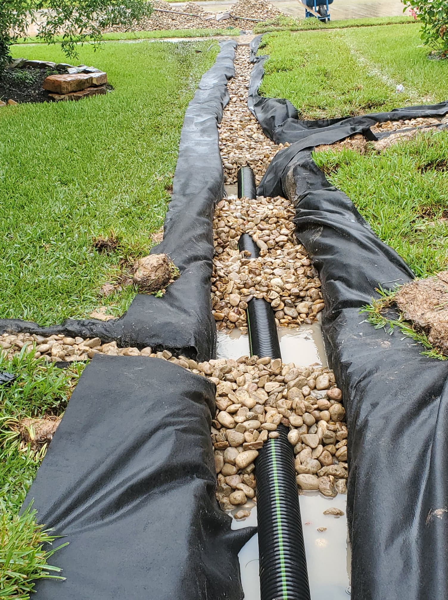
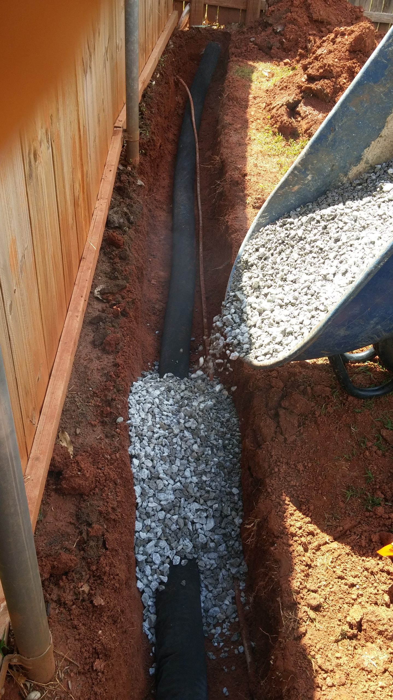
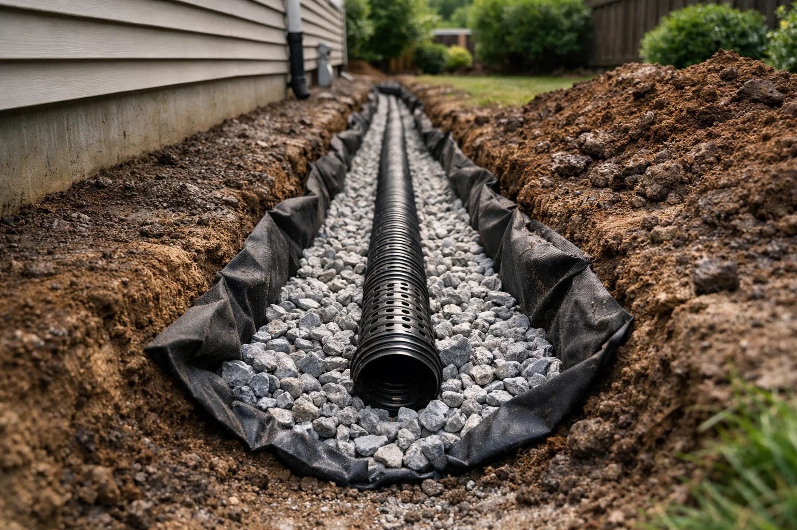

01
French Drains
Long-lasting, nearly invisible systems that move surface and groundwater away from your property.
Ask our crew →Savannah's drainage specialists
Expert drainage solutions. Zero guesswork.
French drains, yard drainage, storm pipes, and foundation protection designed for the way water moves across Coastal Georgia properties.

What we solve
From a single soggy corner to a whole-property water problem, we design around your grade, soil, structures, and discharge point.
Long-lasting, nearly invisible systems that move surface and groundwater away from your property.
Ask our crew →Custom drainage plans for foundations, lawns, beds, patios, and problem areas outside your home.
Ask our crew →Perimeter drainage that helps protect basements and below-grade spaces from unwanted water.
Ask our crew →High-capacity underground piping installed to manage heavy Coastal Georgia rain and runoff.
Ask our crew →Practical diagnosis for slow, clogged, damaged, or underperforming drainage systems.
Ask our crew →Targeted solutions for standing water, soggy lawns, erosion, and unusable outdoor spaces.
Ask our crew →We'll trace the water, explain the options, and give you an honest written estimate.
Talk to a drainage expert →Built below the surface
Water always finds the low point. Our job is to give it a controlled route away from your lawn, foundation, or hardscape.


Local homeowner feedback
Clear communication, careful work, and drainage systems built to do their job.
“Excellent comprehensive service from very experienced professionals — and affordable!”
“So professional, courteous, and quick!”
“Great company.”
Where we work
Based in Savannah and serving homes and businesses across Chatham County and the surrounding region.
Check your address with our crew →Our process
Three steps from standing water to a drainage system designed to keep it moving.
Call and describe the pooling, runoff, erosion, or moisture you are seeing.
We walk the property, trace the water, and explain the recommended system.
Our in-house crew completes the work with proven materials and a clean finish.
Good to know
Have a question that is not listed? Call our team and we'll talk it through.
Call (912) 455-6215 →Every property moves water differently. We inspect the low spots, grading, soil, downspouts, and discharge options, then recommend the simplest system that solves the actual problem.
Many residential projects can be completed in a few days. Larger or more complex systems may take longer; your written estimate will include a clear project schedule.
We plan access carefully, contain excavation, and restore the work area when installation is complete. Most systems are discreet once finished.
Yes. We design and install drainage solutions for both residential and commercial properties throughout the Savannah area.
Ready to protect your property?
No pressure. No subcontractors. Just an experienced local crew and an honest drainage plan.